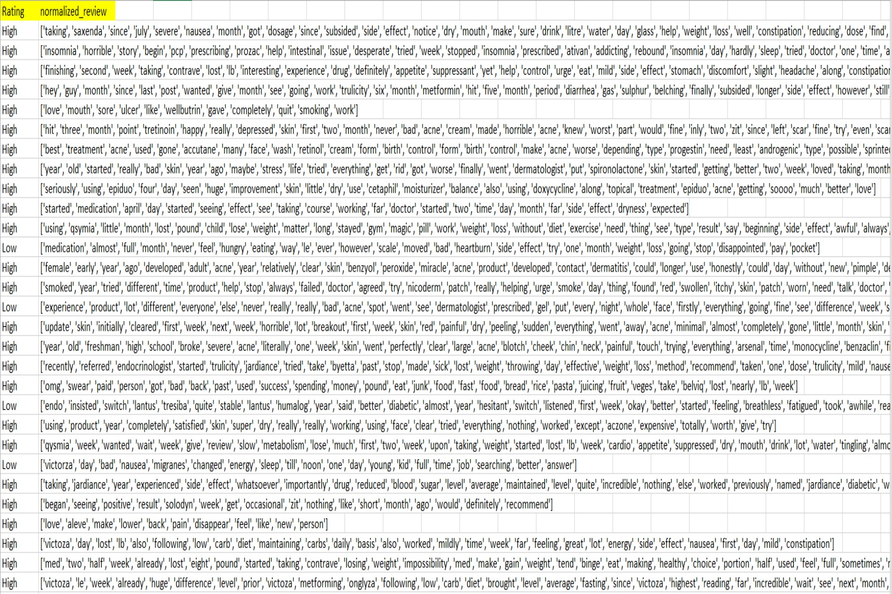
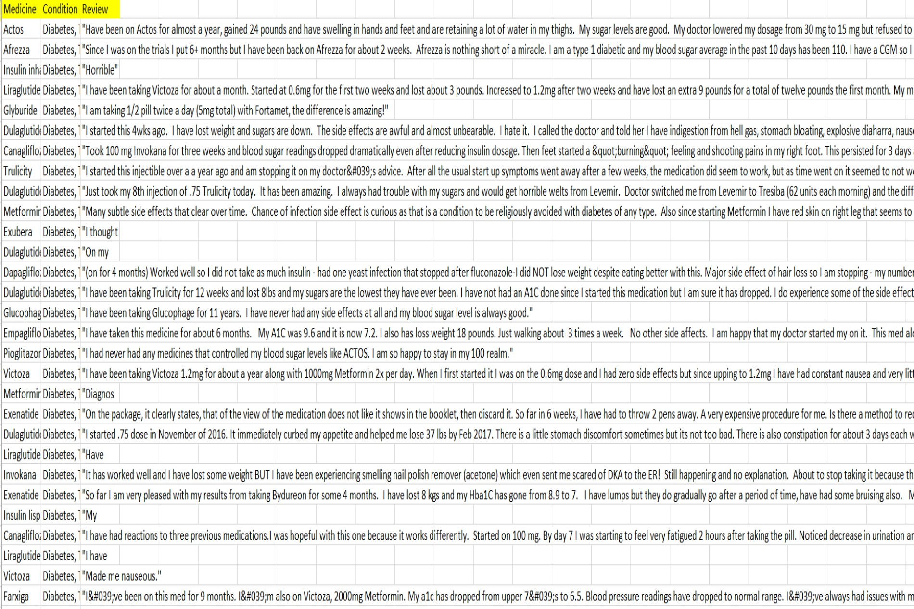
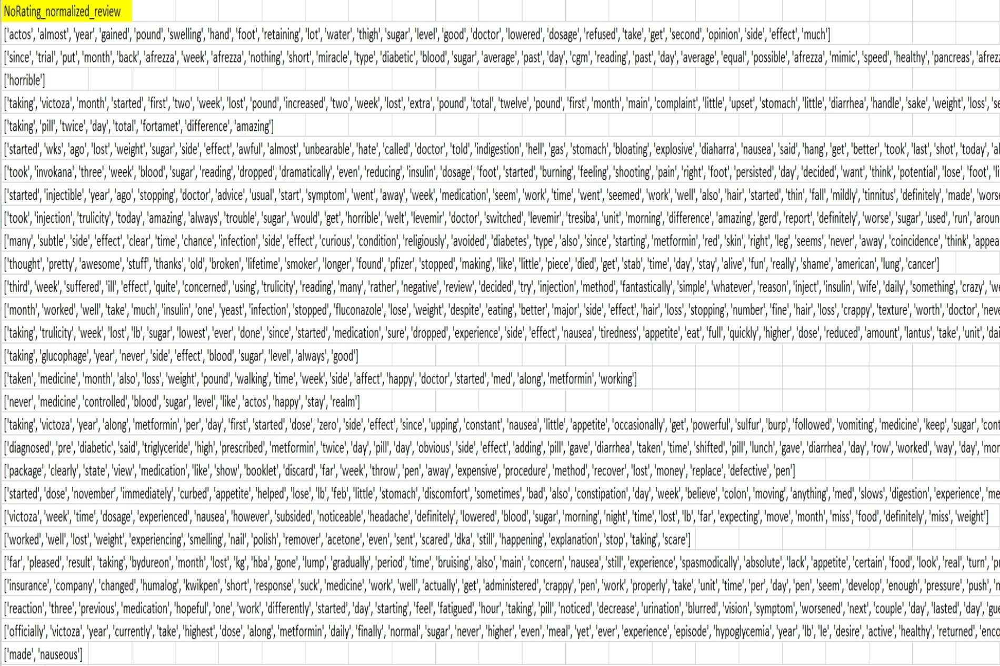
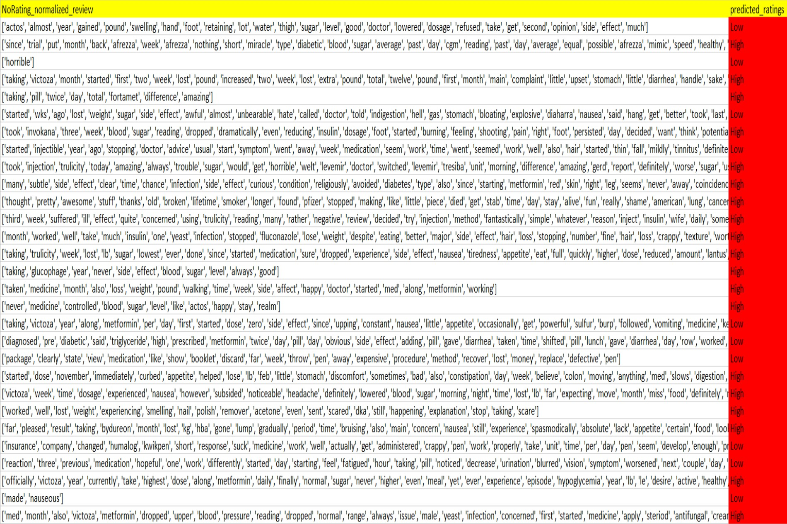
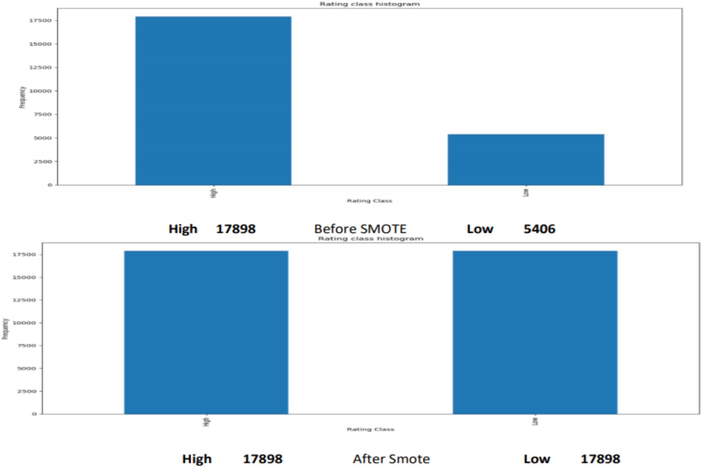

Creating classification Machine Learning models for predicting the sentiment of the customer on Medicine consumption based on their review through a textual comment. Model should be either Support Vector Classifier or Naive Bayes Classifier. Based on the performance of model on train-set best performing model should be applied on test-set and predict the ratings of the review.
When working with raw text it is essential to make it adaptable for Machine Learning models. for this we need some exteranl packages which help to transform raw textual data.
1. Importing Dependencies:
- bs4: Also known as BeautifulSoup 4 a python library useful for pulling data out of HTML and XMLfiles.
- nltk: It consists of the most common algorithms such as tokenizing, part-of-speech tagging, stemming, sentiment analysis, topic segmentation, and named entity recognition.
2. Data pre-processing:
- def normalizer():
Using ‘BeautifulSoup’ function from ‘bs4’ library and ‘lxml’ toolkit to remove XML and HTML encoding
from tweets which come due to some hyperlink present in tweet. Also, Regular Expression(Regrex) is
used to remove any numbers hyperlinks hastags, etc this expression is implemented using manual
scripts. Expression used in this code is: "(@[A-Za-z0-9]+)|([^A-Za-z \t])|(\w+:\/\/\S+)"
As we cannot explicitly implement machine learning model on raw text, we need to split each word like this
['one', 'morning,', 'when', 'gregor', 'samsa', 'woke', 'from']. And convert all
the words in lowercase as case sensitivity changes the impact of same word for machine.
To remove stop words, like to, and, the, etc. from the tweet I have implemented stopword() function from
nltk.corprus librar. We need to mention ‘english’ as attribute to remove stop words of English language there
are 127 stop words for English language in NLTK.
Lemmatizing words having similar meaning despite its tense using WordNet Corpus. e.g. Was -> (to) be, better -
> good, cats -> cat keeping the basic meaning of the word.
3. Data Balancing:
SMOTE(Synthetic Minority Over-sampling Technique) is used as the graph shows data is highly
imbalanced and hence to avoid model taking bias decision which can affect the overall output of the deployed
model.
4. Vectorizer:
TfidfVectorizer (): It is a function from sklearn library under feature_extraction.text class it
takes several attributes:
1) min_df – When making the vocabulary, it ignores strictly terms that
have documented for less than given value having default value = 1. In this code min_df is set as 5.
2)
ngram_range – It extracts the words as a single word based on the lower and upper boundary of the
range of n-values. Which is (1, 2) for this code hence including unigrams and bigrams. tfidf =
TfidfVectorizer(sublinear_tf=True, min_df=5, norm='l2', ngram_range=(1, 2))
this are parameters for model creation code.
| Mean Cross Validation Accuracy | Best Cross validation Accuracy | True Positive | True Negative | False Positive | False Negative |
|---|---|---|---|---|---|
| 0.9107879430626212 | 0.9201716738197425 | 422 | 1722 | 55 | 131 |
| Mean Cross Validation Accuracy | Best Cross validation Accuracy | True Positive | True Negative | False Positive | False Negative |
|---|---|---|---|---|---|
| 0.8327322356077721 | 0.8434148434148434 | 183 | 1783 | 13 | 352 |
Based on the outcomes of the number it tells that SVC is performing well as compared to NBC on training set MedReviews.csv. Best Cross-Validation accuracy for SVC is 92% making difference of 8% from that of NBC. Also, average mean Cross-Validation value for SVC is higher than NBC by 8%. Based on this, the SVC model is saved, and the vocabulary file is generated using this knowledge about the data for deployment process. After performing data normalization and cleansing SVC model is deployed on NoRatings.csv which will be test set. The vocabulary file generated from model creation code and SVC file which is created when model is saved will be implemented during deployment process
Test Set
Normalized Test Set
Test Set
Normalized Test Set
Predictions
SMOTE: Balancing Data